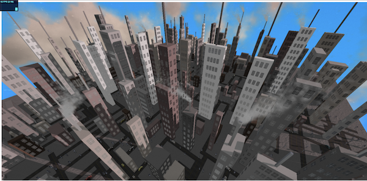

The Island

A procedurally generated island that uses noise and other algorithms to create realistic terrain and foliage - which is then augmented with post-processing based water, screen-space ambient occlusion, and crepuscular lighting.
Procedural City
A procedurally generated city that dynamically creates a road network and then populates the surrounding area with buildings. Pedestrians and cars then intelligently traverse the roads and sidewalks. Dynamic clouds, glowing windows, dynamic shadows, and baked ambient occlusion make the city feel all the better to explore. Check it out now!